공통 체형 기준 · 4~5등신 목표
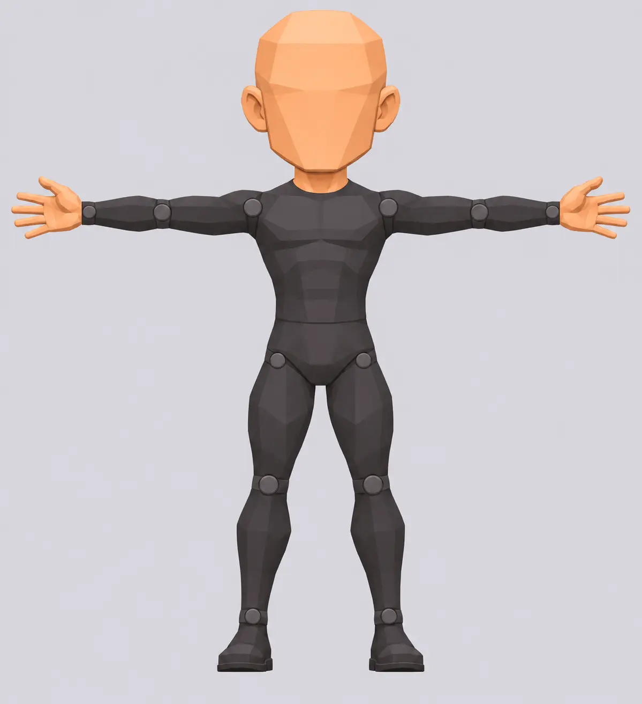
머리 장식과 신발을 제외한 신체를 기준으로 비교. T포즈, 팔·몸통 분리, 좌우 관절을 확인한다.
MUNMU / CAMPAIGN & ASSET MANUAL
기존 신라 대본 전투 36개와 백제·고구려 IF 전투 12개를 한 곳에서 본다. 전투마다 대진·맵·목표·대사·웨이브·보상·제작물을 연결했다. 수치와 IF 대사는 게임용 설계 초안이며 실제 플레이로 확인한 수치가 아니다.
신라 원본 36 + 백제 IF 6 + 고구려 IF 6. 6개 IF는 각 경로의 핵심 판 초안이다.
신라의 전투 전·중·후 대본은 제공 문서를 그대로 표시. IF 대사는 새 창작으로 별도 표시.
신라 백색 천마 · 고구려 청색 청룡 · 백제 황색 봉황 · 당 적색 주작.
각 인물·맵·오브젝트는 그림이 실제 파일로 생성된 경우에만 표시한다. 2D 컨셉은 3D 모델이나 완성 애니메이션이 아니다.
01 / BATTLE BOOK
아래 선택기의 각 6판은 이전에 작성한 IF 원본이며 36전투의 대응 판에도 연결돼 있다.
BODY PROPORTION / TEST
머리 크기, 몸통 길이, 위팔·아래팔과 허벅지·종아리 길이, 어깨·팔꿈치·손목·골반·무릎·발목의 상대 위치를 공통 기준으로 맞춘다. 뚱뚱하거나 마른 차이는 폭과 부피로 표현하고, 머리카락·투구·갑옷은 공통 체형 위의 외형이다.
아래 기준체와 3명은 공통 비율 적용 시험 이미지다. 이미지 생성 결과만으로 관절 위치와 비율이 수치상 동일하다고 보장할 수 없다. 이목구비와 팔다리·관절을 같은 축척으로 검수하기 전까지 기존 도감의 최종 이미지로 대체하지 않는다. 나머지 영웅과 병사·적장도 같은 기준으로 재작업이 필요하다.

머리 장식과 신발을 제외한 신체를 기준으로 비교. T포즈, 팔·몸통 분리, 좌우 관절을 확인한다.
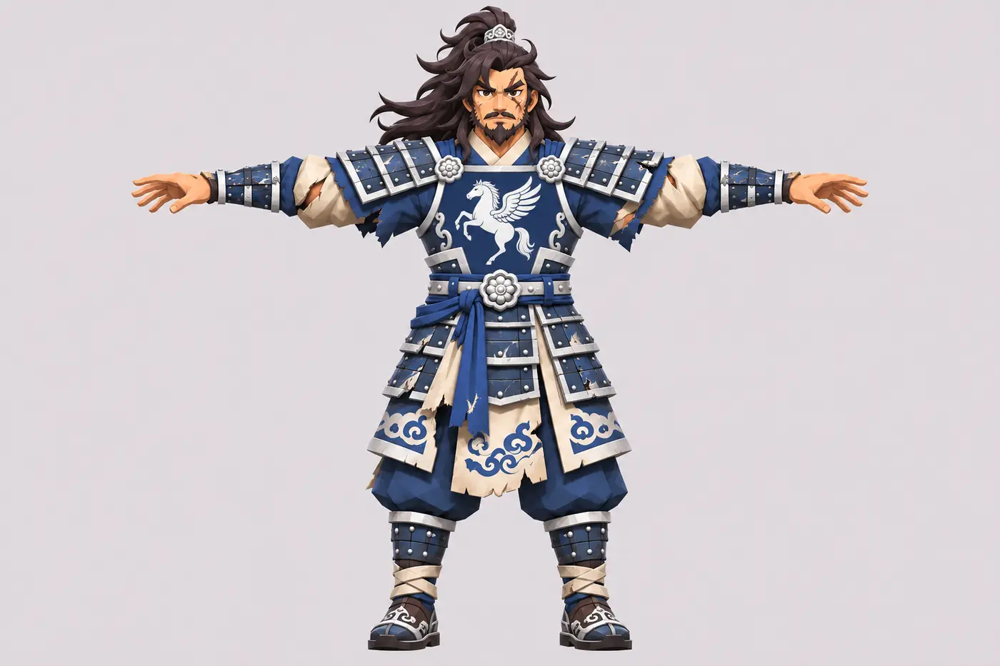
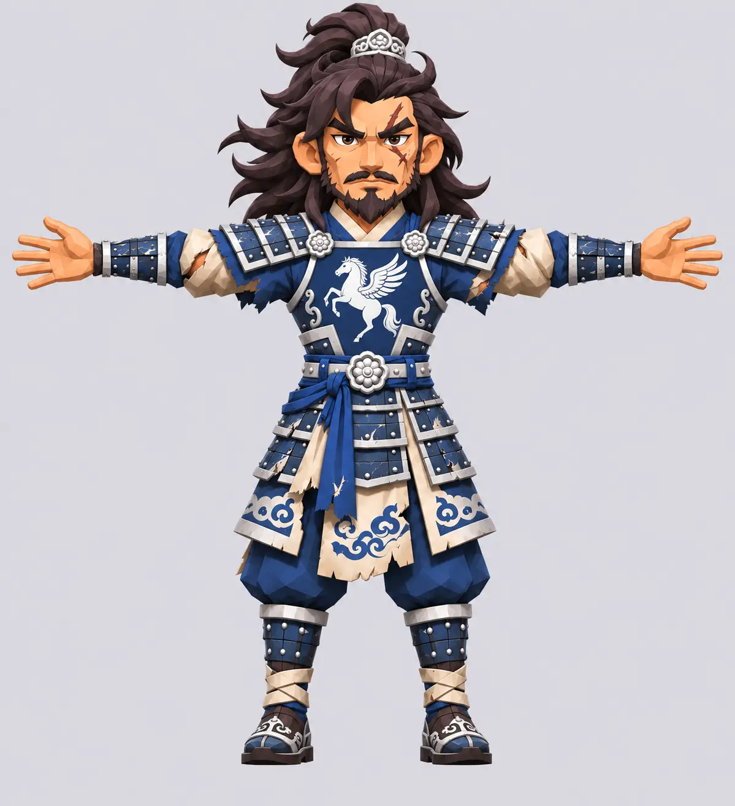
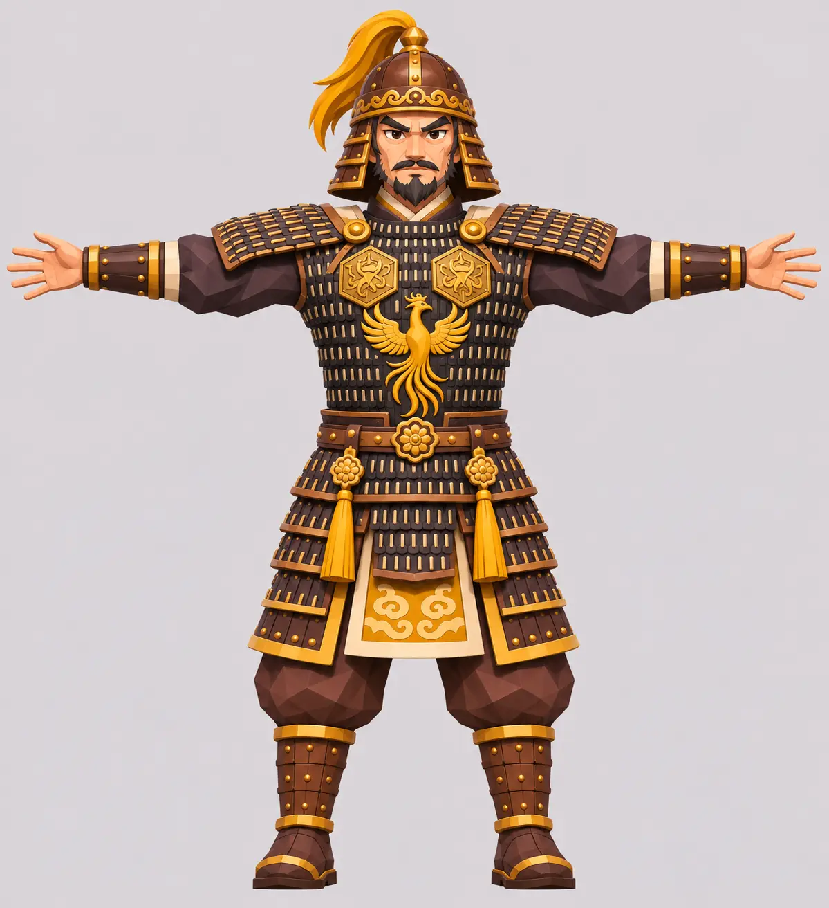
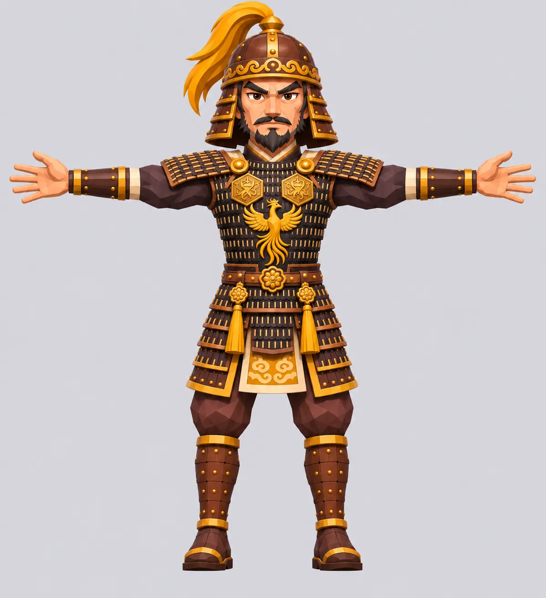
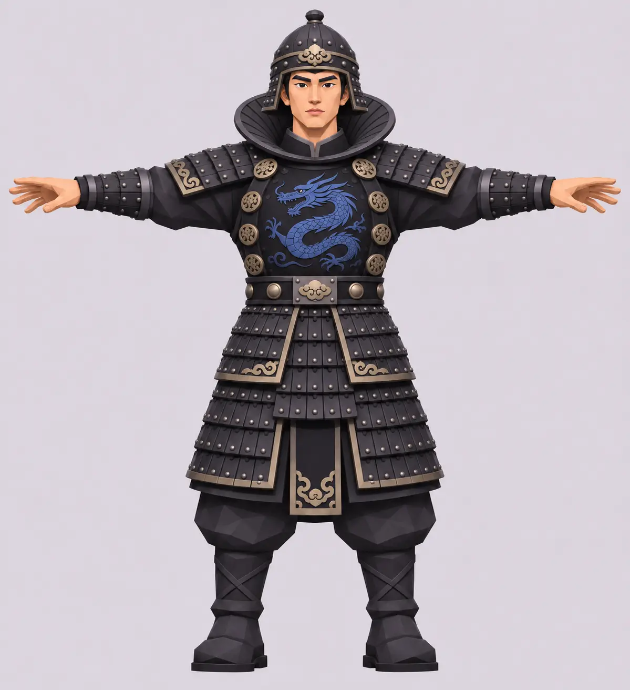
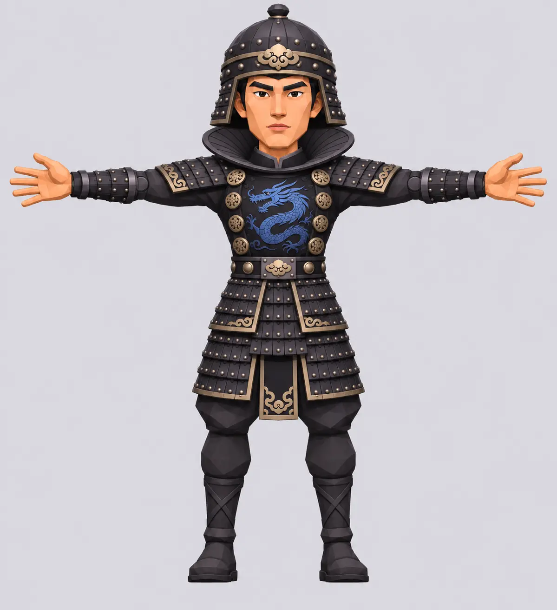
3D 제작 시 하나의 기준 메시와 스켈레톤을 사용하고, Meshy 출력은 관절·머리·팔다리를 기준 모델에 맞춰 보정해야 한다. 그림의 크기만 같게 배치하는 것으로는 일치 여부를 판정할 수 없다.
DRAMA REFERENCE / USER PROVIDED
사용자가 제공한 드라마 장면과 게임 시안의 비교 자료다. 드라마 복식은 게임 디자인의 참고이며 역사 복식의 증거로 단정하지 않는다. 주요 배역은 KBS 드라마 자료, 고연무 배역은 배우 소속사 발표 보도를 확인했다. 이미지의 배우 닮음은 시각 검수 전이다.
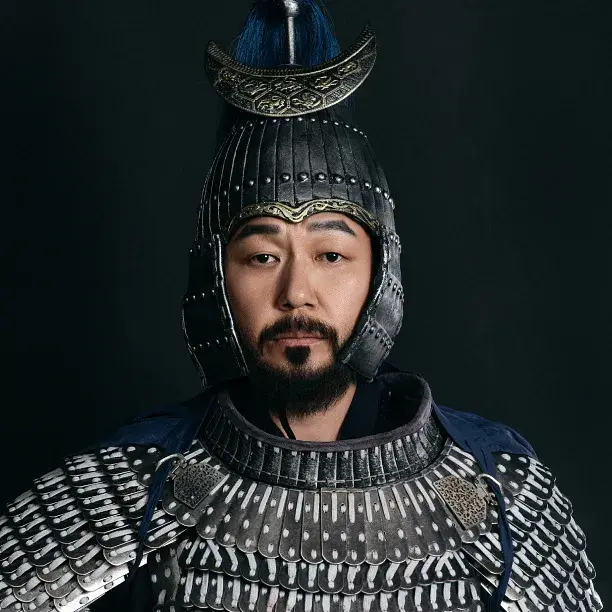
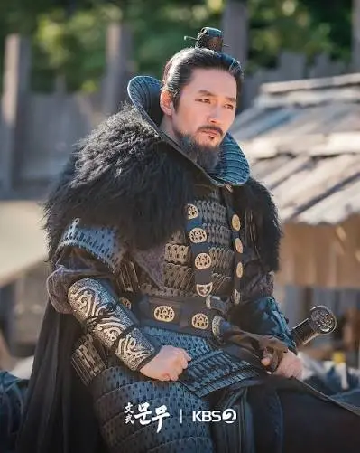
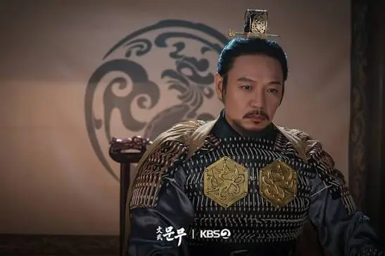
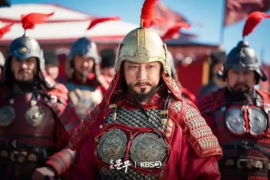
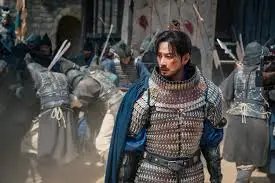
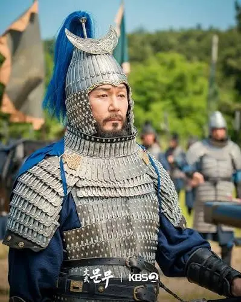
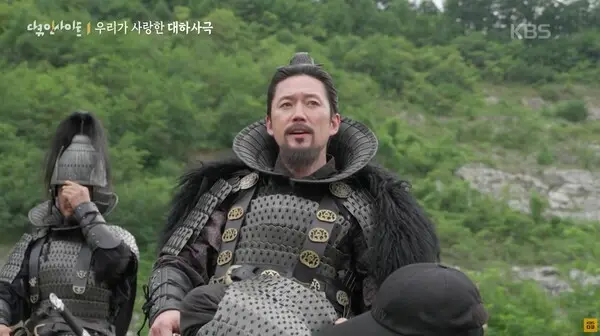
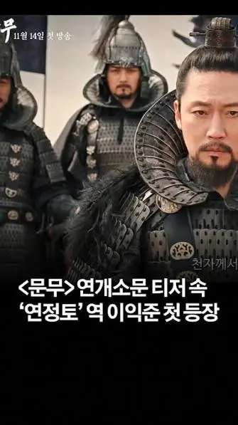
T-POSE / WORK IN PROGRESS
기존 시안의 카툰 로우폴리 스타일과 4~5등신 방향을 유지하며 색과 자세를 시험한 2D 이미지다. 갑옷과 팔이 구분되는지 확인할 수 있도록 망토는 그림에서 제외하고 별도 제작을 전제로 한다. 3D 메시·배우 유사성·리깅은 확인 전이다. 고연무는 백성현, 연개소문은 장혁의 배역이다. 고연무의 잘못 사용된 참고 얼굴은 다시 수정했으며 배우 닮음은 아직 대조 검수 전이다.
02 / HERO DESIGNS
기존 13개 외형과 백제·고구려 플레이를 위한 신규 후보 10명과 연개소문이다. 법민과 문무왕은 같은 인물의 다른 시기다. 신규 인물의 등급·기술과 IF 생존은 기획 제안이다. 각 영웅은 진영 공통색·상징을 사용하고 얼굴과 투구·복식으로 개성을 준다. 일부 시안의 신발과 장비 분리 상태는 개별 검수가 필요하다. 색 적용 전 이미지는 분명하게 이전 시안으로 표시한다.
03 / MILITARY
병사의 이목구비는 영웅보다 단순하게 한다. 새 진영색을 적용한 단독 T포즈 시안이 준비된 병종은 이를 우선 표시한다. 아직 준비되지 않은 것은 이전 시안을 표시한다. 무기·방패·말을 별도 자산으로 조합하는 것이 목표다. 일부 시안에 방패가 몸과 합쳐져 보여 분리 검수가 필요하다. T/A 자세와 리깅 적합성은 모델 생성 후 확인한다.
04 / ENEMY COMMANDERS
기존 명세의 별도 적장 중 기존 영웅 목록에 없는 인물들이다. 장수 몸의 재사용·전용 모델 구분은 원본 명세를 따른다. 이 그림은 창작 외형 시안이며 배우 유사성과 역사적 복식, 토폴로지 및 장비 분리를 확인하지 않았다. 말갈 장수는 별도 세력으로 표기한다.
05 / STORY CHARACTERS
원본 명세의 NPC 18명 가운데 죽죽은 위 적장 목록에 함께 수록하고 나머지 17명은 아래에 둔다. T포즈 그림은 얼굴과 옷을 보는 초안이며, 원본의 기본 몸 재사용 관계는 실제 모델 분리 후 확인한다. 배우가 미확인인 인물은 임의로 단정하지 않는다.
04 / OBJECTS
이미지는 스타일리시 로우폴리 3D 제작을 위한 2D 기준 시안이다. 실제 메시, 분리 가능한 부품, 텍스처·리그·움직임은 아직 제작되지 않았다. 생성되지 않은 것은 빈 상태로 둔다.
05 / PLAYTEST RULES
시험 시작 금화 100. 첫 공세는 0초, 이후 35초 간격으로 시작한다. 한 공세의 각 병종은 2초 간격으로 1개체씩, 종류별로 동시에 출현하는 제안이다. 적 보병·궁병 처치 +6, 기병·공성병 +10, 장수 +25 금화. 출격 단가와 상한은 기존 병종표의 제안값을 따른다.
각 판의 승리 목표를 만족하고 마지막 공세의 남은 적을 정리해야 완료한다. 목표·보호 대상 파괴나 제한 시간 초과는 즉시 패배다. 제한 시간 초과가 실패 조건인데 초가 따로 적히지 않은 판은 300초를 시험한다. 보스·기함은 별도 모델과 판정 구현 전이다.
신라 최초 승리: 금화 80 + 장 번호 × 10, 성장 재료 장 번호 개. 반복 승리: 금화 30 + 장 번호 × 5. IF 최초 승리: 금화 120 + 성장 재료 4개, 반복 승리 50. 모두 밸런스 검증 전 제안이다.
영웅 경험치와 성장 재료는 보유 영웅의 영구 성장에 사용하고, 전투 중의 금화·경험치와 혼동하지 않는다. 획득 조건·경제 밸런스는 플레이 테스트로 조정한다.
기존 매뉴얼의 공통 웨이브 자리표시는 이 판별 초안이 완성된 뜻이 아니다. 여기의 편성·타이밍·수량 역시 구현하거나 실전 테스트하지 않았으며, 대본에서 7·8웨이브가 언급된 전투는 해당 웨이브까지 편성한다.
| 대상 | 체력 / 방어 | 공격 / 주기 | 이동 / 공격 거리 | 행동과 대응 |
|---|---|---|---|---|
| 검병 | 135 / 12 | 26 / 1.2초 | 1.1 / 1 | 가까운 아군을 저지; 기병에 취약 |
| 방패병 | 180 / 25 | 20 / 1.5초 | 0.8 / 1 | 정면 원거리 피해 0.4배 시험; 측면 취약 |
| 창병 | 120 / 10 | 28 / 1.8초 | 1.0 / 1.5~2 | 정면 기병을 저지; 1거리 안 피해 0.7배 |
| 궁병 | 75 / 3 | 22 / 1.6초 | 1.0 / 3~5 | 후방 사격; 2거리 이내 공격 불가 시험 |
| 기병 | 220 / 20 | 40 / 1.8초 | 1.8 / 1~2 | 2거리 이상 직선 가속 후 돌격; 창 정면에 저지 |
| 공성병 | 200 / 10 | 구조물 50 / 2.5초 | 0.6 / 1 | 영웅보다 지정된 문·시설을 우선 공격 |
| 적장 | 900 + 장마다 80 / 20 | 35 + 장마다 3 / 1.8초 | 1.0 / 무기별 | 대본 적장별 기술 2개; IF는 임시 지휘관 |
| 소선 / 궁병선 | 300 / 10 · 400 / 12 | 접촉 20 / 2초 · 사격 22 / 1.6초 | 1.1 · 0.8 / 3~5 | 수로 이동; 발사 위치와 운항 판정 미검증 |
| 군량 수레 / 보호 주민 | 300 / 5 · 50 / 0 | 공격 없음 | 0.7 · 0.8 / 없음 | 지정 경로 자동 이동; 저지·대피 판정 별도 구현 |
1장은 추가 0, 2장 +80/+3, … 9장 +640/+24. 능력치는 이전 병종표를 기준으로 확장한 초안이며 실제 제작 모델·지형·웨이브 시험 전이다. IF는 임시 5장 값(적장 체력 1,220·공격력 47)을 사용한다.